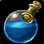

Elixirs
Here we are going to look into what Elixirs are in the game, who uses what and where to find them or even make them. A small disclaimer you will need to have the Alchemy profession to be able to make these for yourself however there is nothing stopping you from gather or buying the reagents and giving them to an alchemist so that they can craft these for you and if that still fells like a lot of work you can simply buy them of the auction house but be warned this gets expensive fast!
Elixir of the Mongoose:

Elixir of the Mongoose is a on use item which will grant the user an increase to their Agility by 25 and a increase to critical hit chance by 2% lasts 1 hour or until death.
As a melee damage dealer this is going to be your main elixer! most classes in classic world of warcraft and season of discovery are heavily dependent on critical strike value so having anything that can just give you an extra 2% for free is a god send in everycase. For more info click here to be taken to the offical WowHead page.
Elixir of Giants:

Elixir of Giants is a on use item which will grant the user an increase to their Strength by 25 lasts 1 hour or until death
As a melee damage dealer this is going to be your second most important consumable along side the Elixir of the Mongoose strength is one of the main stats will determin the amout of damage you will deal. This is normally calculated with attack power and is typical just double your strength (some classes will have a different scaling for this which you will need to look up) so for a fast example if you have 50 strength you would have 100 attack power so having a flask that can give 50 attack power on demand is quite strong. For more info click here to be taken to the offical WowHead page.
Greater Arcane Elixir:

Greater Arcane Elixir is a on use item which will grant the user 35 spell damage for 1 hour or until death
As a spell caster damage dealer Greater Arcane Elixir is going to be your most important Elixir some classes will pair this with other Elixir which we will mention later but the main rule is that every caster damage dealer will want this! There are not many ways for spell casters to increase their flat damage through consumables unlike what we have seen with melee damage dealers so every little helps! For more info click here to be taken to the offical WowHead page.
Elixir of Greater Firepower:
Elixir of Greater Firepower is a on use item which will grant the user 40 spell damage to fire spells only for 30 minutes or until death
As a spell caster this is one of the only other ways you can increase your damage outside of Greater Arcane Elixir but this is now going to be class specific. Because this Elixir only grants a damage increase to fire spells it would mean only builds that are using fire spells will benefit from this that being said even some melee damage dealers will find that they will want to use this Elixir as well because it can interact with other consumables they are using. For more info click here to be taken to the offical WowHead page.
Elixir of Frostpower:
Elixir of frost power is a on use item which will grant the user 15 spell damage to frost spells for 30 minutes or until death
Elixir of frost power is much the same as elixir of fire power in that this Elixir will only increase the spell damage of a specific damage type in this case being frost so it is only required for builds dealing frost damage. For more info click here to be taken to the offical WowHead page.
Elixir of Shadowpower:

Elixir of Shadow power is a on use item which will grant the user 40 spell damage to shadow spells for 30 minutes or until death
Elixir of Shadow power is much the same as elixir of fire power in that this Elixir will only increase the spell damage of a specific damage type in this case being Shadow so it is only required for builds dealing shadow damage. For more info click here to be taken to the offical WowHead page.
Elixir of Superior Defence:

Elixir of Superior Defence is a on use item which will grant the user 450 extra armour for 1 hour or until death
Elixir of Superior Defence is a Elixir that is only mainly used on tanks to provide them an extra chunk of armour to help mitigate damage. There might be some very specfic cases where a damage dealer might also need to take this but that is something that will change based on the raid group you are in. For more info click here to be taken to the offical WowHead page.